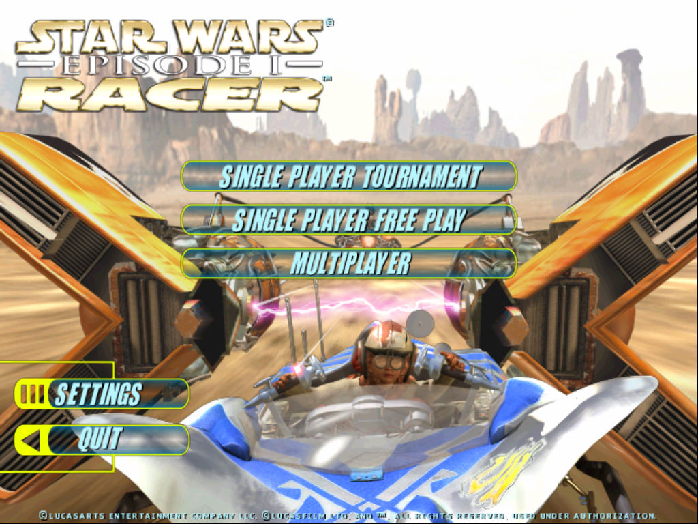
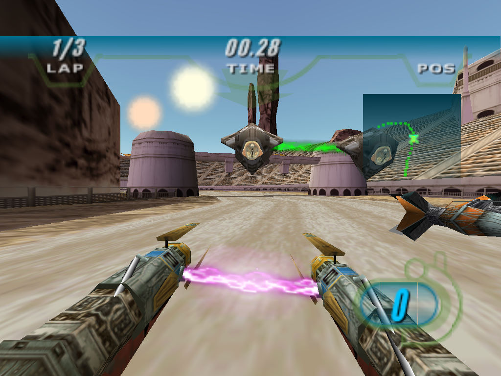

名稱：星際大戰首部曲／星際大戰前傳1：極速飛梭／頭號賽手／賽車手 (Star Wars Episode I: Racer，英文版)
簡介：LucasArts 1999年出品的競速遊戲，改編自同名電影，台灣由松崗代理進口，但並未
中文化。2021年由Limited Run Game推出重製加強版 [待補]。


保護：原始版為光碟，重製版無保護
備註：非安裝移機者，需設定下列Registry（假設安裝目錄在C:\SW1RACER，光碟在D）：
[HKEY_LOCAL_MACHINE\SOFTWARE\LucasArts Entertainment Company LLC\Star Wars: Episode I Racer\v1.0]
[HKEY_LOCAL_MACHINE\SOFTWARE\WOW6432N\LucasArts Entertainment Company LLC\Star Wars: Episode I Racer\v1.0]
"Executable"="C:\\SW1RACER\\SWEP1RCR.EXE"
"Install Path"="C:\\SW1RACER"
"Source Path"="D:"
"CD Path"="D:"
"Analyze Path"="D:\\INSTALL\\SysCheck.exe"
"Source Dir"="D:\\"
"JoystickID"="1"
"InstallType"=dword:00000009
目錄名稱不可使用".\"的相對目錄。若是重製版則需變更下列Registry：
"Source Path"="C:\\SW1RACER"
"CD Path"="C:\\SW1RACER"
"Analyze Path"=".\\SysCheck.exe"
"Source Dir"="C:\\SW1RACER"
備註：重製版VirtualBox無法執行，原始版則需搭配WineD3D，但文字會變粗模糊、貼圖亦有
問題，虛擬機建議使用VMware。
備註：原始版VMware需搭配DxWnd（不可全螢幕），否則畫面會閃爍。